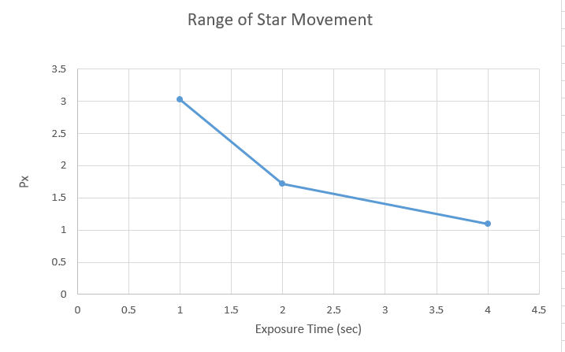
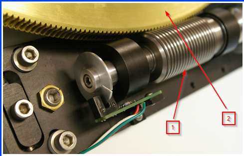
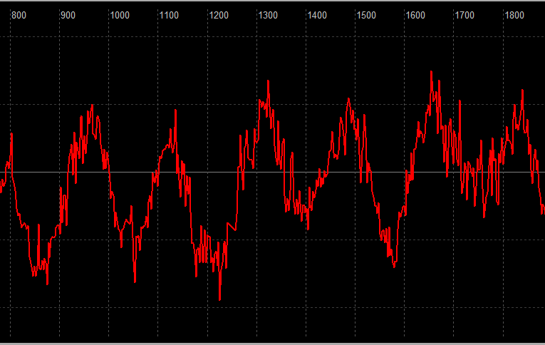
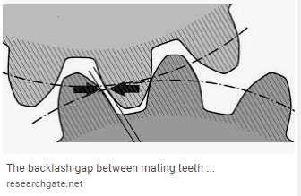
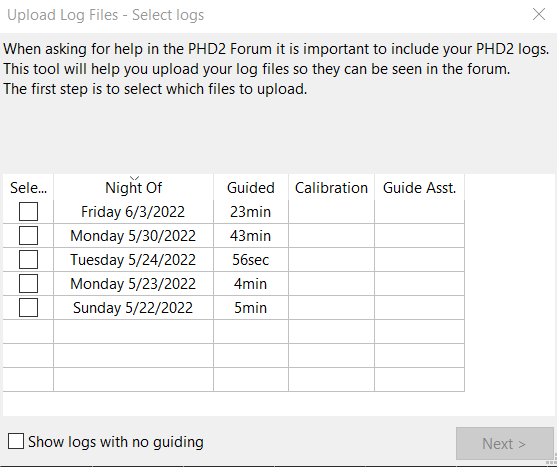
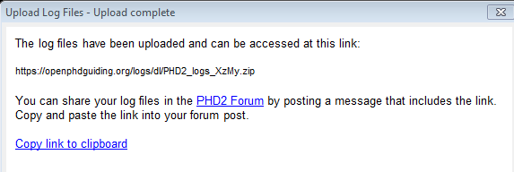
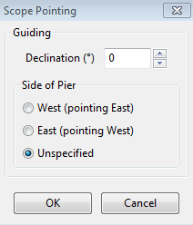
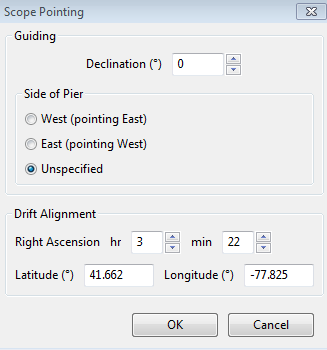
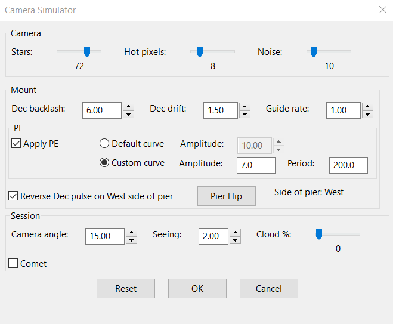

要深入了解天文摄影和导星，就必须认识天文视宁度。
这个话题很复杂，本节只介绍最基本的内容。 “视宁度”描述我们通过望远镜观察或拍摄恒星时，星点位置的抖动以及亮度的突然变化。 肉眼无法分辨星点如此细小的位置变化，因此看到的是星光“闪烁”。 这是大气湍流的结果，由地球大气不同高度上的热气团运动造成。光线经过每个气团时都会折射，因此看一颗星，实际上是在透过一整柱如同无数小透镜的空气观察。 每个气团的折射取决于温度，而各气团通常具有不同温度。 大气又在不断变化，这些气团以不同速度移动，不断进入和离开视线中的空气柱。 尤其在长焦距条件下，即使赤道仪工作正常，大气视宁度仍是所见星点运动的最大来源，而且无法通过常规导星消除。 气团运动使星点位置每秒变化数十至数千次，业余级设备即使配备自适应光学，也无法足够快地响应。专业天文台使用昂贵的测量装置、人造参考星，以及能高速改变镜面形状并移动图像的机构，在很大程度上进行补偿。对这些天文台而言，大部分扰动来自高层大气，视宁度模型和多数预报也主要针对这些层。业余用户，尤其在城区或后院摄影时，还会受到望远镜附近热源的影响。硬质地面或邻近屋顶的热对流会产生较低频率的“沸腾”现象，降低导星和摄影效果。近地面热量还会在镜筒中形成气流和不均匀的热空气层，看起来也像低频视宁度扰动。应尽可能避开或减轻这些情况；在白天高温的地点，通常需要日落后数小时，设备温度才能达到平衡。
导星相机看到的、由视宁度造成的高频星点运动，强烈受曝光时间长短影响。 下图展示：曝光时间增加后，测得的星点运动范围会怎样缩小：

本质上，传感器是在对不断变化的星点光斑取平均，使结果更平滑。 欠采样造成的测量不确定性仍然存在，但较长曝光使 PHD2 更容易分离并识别真正能通过导星改善的低频误差。 当然，曝光时间也有实际的上限。 通常，这取决于赤道仪在无需修正时能够独立保持跟踪多久。 周期误差、漂移、挠曲及其他来源的小误差，必须在大到足以破坏照片之前得到修正。 合适的平衡点始终取决于视宁度和设备质量。 一般建议 PHD2 从约 2 秒曝光开始。只有赤道仪确实需要，而且正在使用多星导星时，才尝试更短曝光；即便如此，也建议至少 0.5 秒。
为减轻固定图样噪声和热像素，摄影者常在两次曝光之间让望远镜移动一点点，这称为抖动。抖动始终由摄影程序控制，因为只有它能在改变指向期间暂停主相机曝光。PHD2 的职责只是发送实现所请求位移的导星指令，按要求执行。它通过两步完成这次微小指向变化：
1.按照摄影程序请求的位移量，更改主导星星点的锁定位置。
2.
使用正常导星流程，将主导星星点移到新的锁定位置。
抖动幅度至少间接地由摄影程序控制。 程序可能允许直接指定最大抖动幅度，单位通常是像素。 此时 PHD2 将其理解为从零到该上限的随机取值范围。 随机化的目的是避免抖动形成简单的来回重复模式，或把画面移回以前的位置。 某些调用 PHD2 抖动的程序不允许直接输入最大幅度，只提供小、中、大等选项，对应预设最大值。因此，PHD2 在“高级设置”的“全局”页提供“抖动倍率（Dither scale）”。它是一个乘数，用来调整可用的抖动幅度范围：1 不改变预设值，10 则放大为 10 倍。如果程序允许直接设置最大幅度，例如 PHD_Dither，应把倍率保持为 1.0。否则，如果对小、中、大某一选项产生的总体范围不满意，可通过倍率调整。
由摄影程序决定导星何时稳定，以及何时开始下一次主相机曝光。为方便摄影软件开发者，PHD2 提供额外的测量信息，反映稳定等待的进展。摄影程序是否使用这些信息完全自愿。要利用它，摄影程序需要指定什么程度的稳定可视为抖动完成，共有三个参数：
1.
允许的最大星点位置误差，称为位置容差，记为PT
2.
星点位置误差必须连续低于容差的时长，称为评估时间，记为ET
3.
允许等待的最长时间；达到后即终止评估，无论是否稳定都结束本次抖动等待，称为超时时间，记为TO
换句话说，导星误差不大于PT并连续保持ET秒，就认为稳定等待完成；如果一直达不到，则在等待TO秒后结束。评估完成时，PHD2 会通知摄影程序。这只是 PHD2 的额外辅助功能，从锁定位置改变开始，正常导星就一直在进行。
当然，这些参数——PT、ET和TO——最终需要由你合理选择。摄影程序可能不在界面中显示全部参数，也可能使用不同名称。如果赤道仪性能一般、抖动幅度又大，就应预计需要较长时间恢复稳定。如果PT过大，或ET过小，也就是条件过于宽松，摄影程序可能过早开始下一次曝光，导致星点拖线。如果TO过短，也会发生同样的问题。反之，如果PT过小，或ET过长，也就是条件过于苛刻，每次抖动都可能等待完整的TO秒后以稳定失败结束，因为要求超出了赤道仪能力。合理方法是查看过去的表现，了解在典型视宁度和所需抖动幅度下，赤道仪的实际响应。如果赤纬回差较大，还要测量赤纬指令换向后需要多久才稳定。ET和PT应基于设备平时能达到的导星表现，并留一点余量，避免浪费时间。稳定等待偶尔超时很常见，通常不会造成问题，但应使用 LogViewer 检查导星日志，确认主相机没有在 PHD2 仍执行大幅修正时开始曝光。
PHD2 还支持不同的赤经、赤纬抖动方式。默认情况下，两轴分别按前述方式移动不同的随机距离。选择“螺旋模式（Spiral mode）”后，导星星点逐步形成围绕原始锁定位置的螺旋轨迹。 这会自动减少赤纬换向次数，适合回差较大的赤道仪。此模式不随机化，每次抖动幅度就是摄影程序指定的大小。 也可以选择“仅赤经（RA-only）”，完全避免赤纬换向；但如果主相机固定图样噪声较重，这可能不是好选择。确定抖动幅度时，必须同时考虑导星系统与主摄影系统的成像比例尺。对于 CMOS 主相机，常见建议是较大的抖动，例如 10～20 像素；这里指的是主相机传感器上的像素，不是导星相机。因此，需要计算导星相机应移动多少像素，才能在主相机上得到所需位移。导星相机所需的像素数往往更少。
如果赤道仪赤纬回差很大，你可能只向北或只向南导星。在这种模式下收到赤纬抖动指令时，PHD2 会临时允许双向赤纬导星，直到抖动和稳定等待结束，再恢复原来的单方向模式。如果不希望这样，应将抖动限制为“仅赤经”。所有 PHD2 抖动控制都在“高级设置”的“全局”页。
周期误差通常由赤经传动系统各部件的微小加工误差造成。 下图展示典型传动系统的一部分：

图片来源：Mathis Instruments
高精度蜗杆，箭头 1，驱动大得多的蜗轮，箭头 2。 蜗轮固定在赤经轴上。按恒星时跟踪时，蜗轮每个恒星日，即 23.934 小时，旋转一周。 要让跟踪完全精确，必须同时满足以下条件：
蜗杆上每段螺纹的螺距和间距完全相同。
蜗杆与安装板刚性固定，齿轮及支座没有挠曲或移动。
蜗轮每个齿的形状和间距完全相同。
蜗轮绝对正圆，而且中心与旋转轴完全重合。
这些只是必要条件的一部分，但显然，大多数业余赤道仪很难具备如此精度。 蜗杆加工通常最具挑战，因此跟踪误差往往首先来自这里。 恒星时跟踪时，蜗杆以恒定速率旋转，转一周的时间称为蜗杆周期。不同赤道仪的周期不同，通常在 4～10 分钟之间。 某段蜗杆螺纹的加工误差，每个蜗杆周期都会表现一次。实际上，多段螺纹都可能存在误差，各自在每个周期中贡献一部分跟踪误差。 将一个蜗杆周期内的跟踪误差绘成图，通常会得到大致呈正弦形、但斜率及峰谷有所变化的曲线，这就是周期误差。 下面是一个例子：

请注意，视宁度造成的高频运动不属于机械周期误差。
赤经系统还有其他齿轮，通常是一组位于电机和蜗杆之间的减速齿轮。 它们把电机的原始转速转换为较慢的蜗杆转速，同时产生驱动蜗杆所需的扭矩。 每个部件都有自身加工误差，共同形成赤道仪的累计跟踪误差。 其中许多部件引入的误差周期，比蜗杆周期更短。 某些赤道仪使用皮带，以避开这些上游齿轮的部分误差，但皮带也可能引入新的问题，如张力不正确、在轮轴上横向移动等。
如果实现正确，赤道仪固件中的周期误差修正（PEC）有助于自动导星。 遗憾的是，并非所有实现都如此。 正确的 PEC 会在部分跟踪误差出现在导星图像之前就进行处理。这些修正依据赤道仪周期误差模型提前预测，与常规自动导星的事后响应不同。 因此，PHD2 为保持赤经指向所需完成的修正更少。 即使赤道仪的 PEC 实现良好，也必须使用专门程序，仔细生成高质量修正曲线。 测量时，程序必须滤除视宁度造成的星点运动，将多个蜗杆周期的样本合成为平滑曲线。它还必须了解蜗杆周期与传动系统中的各阶谐波，只修正谐波性的误差，即频率为蜗杆频率整数倍的误差。如果 PEC 曲线生成不当，赤经跟踪甚至可能比完全不用 PEC 更差。
如果赤道仪没有 PEC，或实现不佳，可以使用 PHD2 的 PPEC 导星算法。PHD2 预测性周期误差修正
当转轴运动方向反转时，可能出现回差：电机虽然已经转动，望远镜却没有立即向反方向移动。常见原因是传动齿轮啮合较松。常规自动导星中，赤经传动始终向西跟踪天空，不会因为导星而真正反转，因此这个问题通常不影响赤经。赤纬则不同：它在大部分时间静止，只有收到向北或向南指令时才短暂转动，所以回差很常见。下面用简单示意图说明原因：

图中是两个直齿轮，但原理同样适用于蜗杆与蜗轮。假设下方齿轮是主动齿轮，当前逆时针旋转。它的齿面与上方从动齿轮接触，使后者顺时针转动。但箭头指出，主动齿轮齿的后侧表面没有接触对应的从动齿面，中间存在小间隙。因此主动齿轮反转后，要经过短暂时间重新完全啮合，从动齿轮才开始反向转动。这种“换向延迟”就是单纯回差造成的。通常必须保留一定间隙，以避免传动卡死，并给润滑剂和热胀冷缩留出空间。啮合过紧时，转轴可能出现静摩擦卡滞（stiction），无法顺畅移动，或很难从静止状态启动。赤纬静摩擦可能表现为：开始时出现类似回差的换向延迟，而一旦终于启动，又产生很大的过冲。除误开赤道仪软件中的回差补偿外，静摩擦卡滞是赤纬导星振荡最常见的原因。
导星助手会强制赤纬轴换向，测量其响应。它只能测量“换向延迟”，即改变方向并达到预期转速所需的时间；并不总能区分根因是回差、静摩擦，还是两者兼有，但生成的图形常能提供线索。即使在正常导星、没有使用导星助手的大脉冲时，也可能观察到相同现象。如果换向延迟很大，例如超过 3 秒，最好先调整赤纬传动系统。如果小于这个值，PHD2 的赤纬回差补偿通常能够较好处理。请注意，延迟与赤道仪导星速率成反比：导星速率越高，换向延迟越短。这也是建议至少使用 0.5 倍恒星时导星速率的原因之一。
同一赤道仪的换向延迟通常不是固定值，而会随望远镜指向及赤纬平衡状态变化。随着使用年限增加，齿轮逐渐磨损；赤纬齿轮磨损最严重的位置，往往是摄影时最常用的区域。对于北半球观测者，通常是赤纬 0～40°。尤其在老旧赤道仪上，这些位置的延迟可能与天极附近很不一样。因此，PHD2 的自适应回差补偿通常优于写入赤道仪控制器的固定补偿量。
具有高精度绝对编码器和详细指向模型的赤道仪，往往能在完全不导星的情况下摄影。 但无需任何修正的持续时间仍有上限。 此时的目标是提供一种备用导星机制，既不与编码器和指向模型的修正冲突，又能改善总体结果。 建议采用以下策略：
1.
尽可能降低导星指令频率。这类赤道仪内部可能已十分忙碌，不断接收编码器和精细指向模型的修正，而 ASCOM 程序看不到这些动作。较低导星频率可减少外部指令干扰内部控制、造成不稳定的可能性。
2.
尤其注意不要追逐视宁度。最简单的方法是使用中等或较长曝光，并给最小移动量留出较大余量。
在较早的 PHD2 版本中，可以使用 4～8 秒曝光，再加非零的“帧间延迟（Time lapse）”近似实现。帧间延迟是在上一条导星指令完成后，到下一次相机曝光开始前插入固定等待。缺点是循环曝光、选星、标定、抖动和稳定等待等非稳态操作，也会被无谓拖慢。“可变延迟（Variable delay）”允许设置两种不同延迟，解决这个问题：
1.
“短延迟”用于稳态导星以外的所有活动。可以为零，但部分赤道仪需要非零值，让编码器有时间完成修正。通常没有必要超过 1 秒。
2.
“长延迟”用于长曝光摄影时通常进行的逐帧稳态导星。它与相机曝光时间相加，共同决定导星节奏。
例如，相机曝光 4 秒、短延迟 1 秒、长延迟 4 秒。4 秒曝光可以较好抑制视宁度影响，而 4+4 秒使大部分摄影过程保持 8 秒一次的导星节奏。同时，抖动稳定期间则使用 4+1 秒的较短曝光间隔，缩短等待。
任何望远镜和相机组合，在跟踪天空目标时都会以不同方式弯曲和下垂，这是重力及物理规律的自然结果。 每个部件的具体表现又取决于自身质量，以及与相邻部件的连接方式。 尤其是大口径望远镜和重型相机，挠曲量可能很显著，因为导星修正本身只有几微米量级。 我们通常不熟悉这么小的尺寸，可以这样理解：人类头发直径约 50 微米，大约是多数导星修正量的 10 倍。
主镜之外再使用独立导星镜时，两套系统会各自独立弯曲和位移，这称为差异挠曲。 PHD2 通过独立导星镜只能看到并修正导星镜和导星相机的运动，看不到主镜及主相机的相对位移。 因此常出现令人困惑的情况：导星数据很好，主相机拍到的星点却拉长了。
双镜系统中始终存在一定差异挠曲，问题只是有多大，以及是否足以损害照片。
主镜焦距达到或超过 1800 毫米时，差异挠曲通常会成为问题，除非主相机曝光保持较短。 无法事先准确预测，因为可能移动的机械连接点太多：施密特-卡塞格林望远镜的可动主镜、相机和调焦座之间的各个接头、调焦座本身、系统中的手拧螺丝、导星镜抱箍结构等。 常见解决办法是放弃双镜结构，在主镜上使用离轴导星器（OAG）。 这样 PHD2 就能看到所有会影响主相机图像的运动，无论来自机械因素还是其他原因。 早期离轴导星器的视场很小，不容易找到合适星点，因此使用较困难。 随着新一代导星相机具备较大且高灵敏度的传感器，多数这类困难已明显减少。
如果经常出现长条星点，但赤经和赤纬导星统计都相当正常且接近，就应怀疑差异挠曲。 通常可以用简单测试验证。 保持导星，用主相机找到仍能拍出可接受圆星点的最长曝光时间。 然后按这个时长连续拍摄约 10～20 张，用能够查看图像序列的软件，按拍摄顺序快速切换闪看。 通常会看到每张图中的恒星相对上一张都有一致偏移，循环查看时，星点像是在朝某个方向“行进”。 也可以不对齐就直接叠加所有图像，从而显现星点拉长。
一般而言，业余级自适应或主动光学（AO）只能处理造成导星不佳的部分问题。它通常能掩盖或改善赤道仪性能不足，因为大多数修正只需要移动小型倾斜光学元件，而不是几十千克的望远镜设备。赤道仪基本只需维持恒星时跟踪，很少参与其他动作。回差、静摩擦和周期误差大多可被 AO 掩盖。又因为 AO 本质上是离轴导星结构，也能消除差异挠曲。这些明显优点解释了许多资深摄影者为什么使用 AO。
AO 通常无法消除视宁度引起的星点运动。高层大气造成的变化频率至少每秒数百次，实际很难找到足够明亮、可按如此高速测量的参考星。如果强行提高 AO 速度，会遇到两个问题：第一，可用星点的信噪比可能过低，定位精度随之降低；第二，对视宁度位移产生欠采样。后者会造成混叠，产生错误修正，甚至使情况变差。因此，AO 用户仍建议使用不短于 0.5 秒的曝光，避免追逐视宁度。AO 的实际目标，是让赤道仪的跟踪精度和响应看起来优于本来的机械性能。如果摄影效果并不受赤道仪性能限制，AO 很可能收益有限。
AO 导星有时需要同时向 AO 和赤道仪发送指令。只要修正没有超出倾斜元件的物理范围，指令就只发给 AO；接近行程极限时，再向赤道仪发送回中推动指令（bump），把主导星星点带回倾斜元件的中心附近。这可能用于补偿极轴漂移、线缆拉扯等外因造成的大偏移，或较大抖动。如何混合这两类指令，见本手册“高级设置/AO 参数”。AO 参数





PHD2 论坛对求助最常见的回复之一是：请升级到最新版本，再检查问题是否仍然存在。如果旧版出现问题，很可能别人已遇到，而且新版本已经修复。因此，PHD2 开发者认为保持程序更新很重要。
更新用于无人值守摄影的软件，有时会让人担心风险。PHD2 开发者理解这种顾虑，因为他们自己也从事天文摄影。保持稳定环境与获得最新修复和改进之间，需要权衡。有时相机厂家为了支持新型号，会对驱动和 SDK 作出不兼容更改。为支持新相机，PHD2 不得不更新 SDK，但这也意味着原先工作正常的相机和驱动可能遇到兼容性问题，只有同时升级到最新相机驱动及 PHD2 才能解决。
PHD2 通过两条发布系列平衡这些需求。开发版包含最新修复和功能改进，发布前由开发者测试，通常直接在实际摄影中验证。选择开发版的用户可以较早获得新功能和修复。版本名如 2.6.3dev6，表示 2.6.3 正式版之后的第 6 个开发版。
开发版经过更长时间测试后，会定期作为正式版发布。例如 2.6.3dev6 可能最终发布为正式版 2.6.4。
PHD2 可自动检查软件更新，建议开启以保持版本较新。启用后，程序启动时会在后台检查；若有更新，会提供安装新版本的选项。自动检查不会干扰正常导星或自动化操作。在没有网络的野外摄影时，也可以放心保持开启；如果无法检查，它会等到下次启动再试。
无论是否允许启动时自动检查，都可以随时从“帮助”菜单点击“检查更新（Check for updates）”，手动检查。